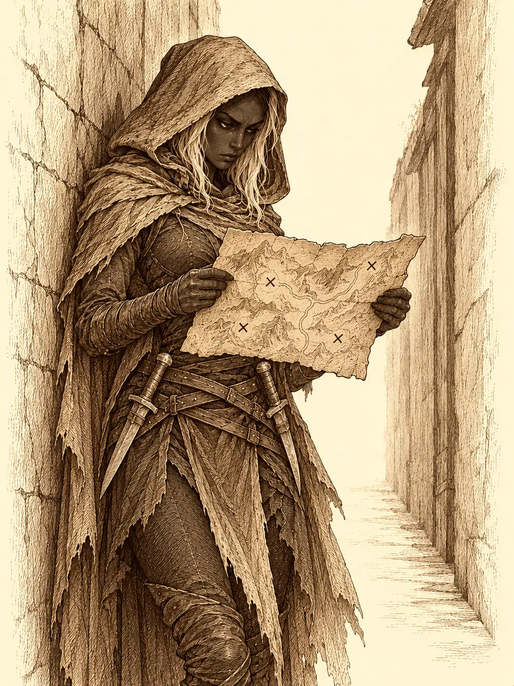

Capítulo 40
El bibliotecario
Libro III · La boda del shogun
Sho olía a pescado, a incienso y a mucha gente junta. Maroxi llevaba dos días recorriéndola vestido con la armadura de los samuráis de la ciudad, que había copiado con un vistazo, para que nadie se fijara en él: los barrios ricos, de calles anchas y faroles de papel; el barrio bajo, donde los tejados se tocaban por encima de las cabezas; los mercados, los templos, la muralla del castillo. Era lo que hacía siempre al llegar a un sitio nuevo. Mirar cómo vestía la gente, cómo andaba, de qué tenía miedo.
Se habían instalado en la taberna de Ushi mientras iban llegando los demás cazadores. Erk se había quedado al cargo del mímico, escondido en el carro bajo una lona, porque a nadie le pareció buena idea que el tabernero lo viera. Hiki se había unido a ellos en la capital, recién llegado.
Durante el viaje, Sun le había preguntado a Maroxi por sus transformaciones, y el cambiante le había contado que no eran magia aprendida, sino algo con lo que había nacido, algo de su gente. Le había hablado también de su poblado, del día en que lo atacaron los dragones y él tuvo que huir. Como Sun no podía cambiar de forma, Maroxi le enseñaba otras cosas: a disfrazarse, a pasar desapercibido, a llevar el kit de disfraces sin que se notara que lo llevaba. Y le había ido contando todo lo que había leído en los papeles de Guxi sobre Otakemaru, porque el mono, a esas alturas, sabía menos que él.
Fueron primero a la librería de la calle principal, pero estaba cerrada. Un cartel en la puerta decía que el dueño estaba ausente.
"¿Ves?", dijo Sun. "No hay que fiarse de los libros".
Decidieron pedir audiencia al shogun.
Los guardias de la muralla los reconocieron enseguida como los cazadores que habían salvado la boda. Al cabo de unos minutos los hicieron pasar por un pasillo largo, lleno de puertas, hasta la sala principal. El shogun estaba sentado en el estrado con su esposa, Rua, rodeado de nobles y guardias, y al verlos se le iluminó la cara. Rua les dedicó un saludo discreto con la mano. El gobernante apartó con un gesto a los nobles para que los cazadores pudieran acercarse y sentarse en los cojines.
Hiki le susurró algo a Maroxi al oído. Sun también.
"¿Decíais algo?", preguntó el shogun.
"Mi compañero no había reparado en la belleza de su esposa", contestó Maroxi. "Y usted, mi señor, luce hoy con una dignidad propia de un emperador".
El shogun se ruborizó y sonrió aún más.
"Bueno, decidme. Me han dicho que queríais hablar conmigo".
"Hemos tenido noticias preocupantes sobre un ser antiguo de estas tierras", dijo Maroxi. "Se hace llamar Otakemaru".
El murmullo de los nobles se extendió por la sala como el viento por un campo de arroz. Rua se llevó una mano al pecho. Al shogun se le borró la sonrisa.
"Es una antigua leyenda. Dicen que hace más de mil años destruyó todo el continente y se apoderó de él. Unos grandes héroes acabaron con él. Por eso es extraño que habléis de esto".
Maroxi le enseñó el trozo de cuero con el símbolo de las armaduras. El shogun lo tomó en las manos, lo miró con atención y se lo pasó a los nobles, que se arremolinaron alrededor.
"Es el símbolo de la antigua civilización que gobernaba Kuroto antes de que Otakemaru la aniquilara. No recuerdo su nombre. Quizá esté en los archivos".
Les dio permiso para consultarlos, y cuando Maroxi mencionó que vivían en una taberna, ofreció preparar para ellos un ala del castillo.
Hiki quiso enseñarle el mapa con las cuatro cruces. Hizo aparecer una mano de luz que sacó de su bolsa el pergamino, lo desplegó con ceremonia en el aire, delante de todos, y leyó en voz alta lo que ponía: un tomate, dos cervezas. Era una receta de cocina. El mapa no estaba.
"¡Oh, qué miserable tragedia!", empezó a cantar Hiki. "¿Por qué este infortunio, aquí y ahora?".
El shogun miró a su esposa.
"Extraño. Pero suena bien".
Maroxi recordaba las zonas más o menos: una cruz al norte, entre montañas; otra en alguna isla cerca de Sho; otra en las montañas del sur. Exactamente, no. El shogun no había salido mucho de la capital. Quizá en los registros encontraran algo.
Un guardia los llevó a la biblioteca del palacio. Al abrir la puerta se quedaron quietos: estanterías hasta el techo, libros apilados en el suelo, pergaminos enrollados en nichos, un olor a papel viejo y a cera.
Maroxi buscó tres cosas a la vez. Encontró libros de magia con conjuros sencillos, de los primeros que aprende un mago. Encontró tratados de yokai con dibujos: una sandalia con ojos y boca, una lámpara viva, una puerta que le recordó a la de la base, criaturas que nacían de los objetos viejos. Encontró fórmulas para preparar pociones de curación, unas más sencillas y otras más fuertes. Y debajo de una pila de volúmenes, cubierto de polvo, uno tan maltratado que se le deshacían las hojas.
Hablaba de unos guardianes que hacía mucho tiempo protegían Kuroto. Había un dibujo: una esfera con cuatro criaturas alrededor. Y cuatro nombres, que Maroxi apenas pudo descifrar: Suzaku, Genbu, Byakko, Seiryu. El resto del libro era ilegible. Como no creía que aguantara un viaje, copió el dibujo y los nombres en su cuaderno y se guardó otros volúmenes.
Hiki encontró un libro de cuentos, el de los tres cerditos, y se emocionó otra vez con el lobo que derriba la casa de un soplido. Maroxi le buscó algo mejor: una historia donde moría la amada del héroe y el héroe se quedaba sin casa, y cada página traía una desgracia nueva. Al bardo se le pusieron los ojos como platos.
Sun fingió buscar sobre Otakemaru y, en cuanto nadie lo miraba, buscó sobre el Rey Mono y su nube. No encontró nada. Para él, su libro era único.
Se les hizo de noche sin que nadie se acordara de comer.
Volvían hacia la taberna por la calle principal cuando, al pasar junto a un callejón, una mano asomó desde la sombra y les hizo una seña.
En el callejón, apoyada en la pared, había una figura encapuchada con dos hojas cortas al cinto. Llevaba algo en la mano. Lo desplegó: era su mapa.
"¿Necesitáis esto?".
Sun se acercó demasiado y de pronto tenía una hoja apoyada en el cuello, con un hilo de sangre corriéndole hacia la clavícula. Se quedó mirando a la desconocida con ojos tiernos. Hiki también. La figura bajó la capucha: tenía la piel oscura de los drow y miraba al monje y al bardo como si no supiera qué clase de criaturas eran. Por encima de sus cabezas, buscó a Maroxi.
"¿Esto es normal?".
"Depende de quién lo pregunte".
La drow guardó el arma, pasó entre Sun y Hiki sin tocarlos y se acercó al cambiante.
"Me llamo Danifae". Hizo una reverencia que parecía una burla. "Os he robado esto del bolsillo de vuestro bardo. Quería sacar algo de dinero, pero al ver las marcas me he interesado. He oído que las estáis buscando. Creo que son antiguos templos".
En la taberna, mientras cenaban, les contó el resto. Robaba por la ciudad. Aquellas marcas señalaban templos de hacía muchos siglos, y donde hay templos abandonados suele haber botín. No había estado en ninguno; si hubiera estado, ya no quedaría nada. No quería ir sola. Les devolvía el mapa si la dejaban acompañarlos.

"Esta belleza puede venir con nosotros todo el tiempo que quiera", dijo Hiki.
Maroxi aceptó, sin terminar de fiarse. Danifae se levantó, arrojó unas monedas a Ushi para pagar la cena de todos y se dirigió a la puerta. Sun nunca supo que aquellas monedas habían salido de su bolsa.
"La librería cerrada", dijo la drow. "Podríamos echar un vistazo. Solo necesito que me distraigáis a la gente".
Delante de la librería había un guardia y unos cuantos transeúntes. Maroxi hizo sonar al fondo del callejón el llanto de un bebé, fuerte, desesperado, y la gente se volvió a mirar. Hiki se derrumbó en mitad de la calle con su estoque contra el pecho, vertiendo un poco de bebida para que pareciera sangre, y se puso a declamar su propia muerte trágica. El guardia corrió a socorrerlo. Para cuando se levantó con unas monedas de propina en la mano, la puerta ya estaba abierta y Danifae había metido dentro a Sun de un tirón.
La librería estaba revuelta. Pero no era Danifae quien la había forzado: alguien había entrado antes, por las malas. Había golpes en las paredes, una gota de sangre seca en el suelo y unas marcas largas, como de algo arrastrado hacia la puerta. Sun, para sorpresa de todos, encontró un rastro casi invisible que salía de la tienda.
"Han arrastrado a alguien por aquí".
El rastro iba hacia el sur.
Al pasar por la puerta del burdel de Sho, la puerta se abrió de golpe y tiró a Sun de culo. Un hombre vestido de geisha lo levantó entre disculpas.
"¿Vosotros sois los cazadores? ¿Cuál es el bardo? La señora del burdel de Ukio me ha dicho que vendría un tal Yurei".
Se llamaba Wishi. Buscaba al enano. Maroxi se escabulló, volvió con la cara del enano y se presentó. Wishi lo sentó a su lado: el casino de Ukio ya funcionaba, la señora le había encargado que le diera su parte, y le contó veintiséis monedas. De Otakemaru no sabía nada. Mientras tanto, las chicas del burdel rodearon a Sun y a Hiki con bebida y atenciones, y Danifae se quedó en el umbral mirando aquello con la boca entreabierta.
"Creo que no tendría que haber hecho un pacto con esta gente", murmuró.
Al rato salieron, Maroxi otra vez con su cara, y Sun retomó el rastro.
Los llevó a la zona de los almacenes, entre edificios grandes y oscuros. El rastro terminaba en una puerta cerrada con un rótulo que decía Jaiki. Danifae se agachó junto al candado y lo abrió en un suspiro; luego, sin mirar, le puso a Maroxi el candado en la mano.
Dentro había dos guardias de la ciudad, de uniforme, hablando en voz baja. Más al fondo, entre cajas, otras voces.
Sun se puso un disfraz de soldado y entró saludando.
"Buenas noches, camaradas. Vengo a daros el relevo".
Los guardias vieron entrar a un mono con una armadura mal puesta, la cola asomando por debajo y el bastón a la espalda, y desenvainaron. Hiki les lanzó un hechizo para calmarles el ánimo y los dos bajaron las katanas, de pronto indiferentes. Maroxi entró detrás con el rostro, el porte y la voz del shogun.
De entre las cajas salió un hombre con túnica y una máscara. En la máscara estaba el símbolo de Otakemaru.
"El shogun", dijo. "Será nuestro momento".
Danifae chasqueó los dedos y una cúpula de oscuridad cubrió medio almacén. Se movía entre las cajas como si hubiera nacido entre ellas, con una daga en cada mano. Sun derribaba y golpeaba. Hiki les susurraba a los enemigos cosas que los hacían temblar y sostenía a sus compañeros con su música. Los guardias, al ver a uno de los suyos herido, volvieron a ser hostiles. Los enmascarados lanzaban rayos desde la punta de los dedos, se volvían más rápidos de lo que debería ser posible y se protegían con escudos de magia.
Maroxi, con la cara del shogun, miró a uno de los samuráis a los ojos.
"Protege a tu señor, o pasarás el resto de tus días en un calabozo".
El samurái se dio la vuelta y se lanzó contra los suyos.
Al fondo, entre las cajas, había un anciano maniatado. Los enmascarados se volvían hacia él de vez en cuando y le exigían algo que él no podía o no quería darles. Hiki dejó paralizados a dos enemigos, que se quedaron rígidos como estatuas, y Danifae les clavó las dagas sin que pudieran moverse. Maroxi tenía a mano su espada de sombras, pero no la invocó: necesitaba toda su concentración para que el samurái siguiera creyendo que protegía a su señor. Peleó con la otra espada.
Cuando cayó el último enmascarado, Maroxi, todavía shogun, señaló al samurái hechizado.
"¡Cazadores, coged a ese traidor!".
Lo ataron. Hiki desató al anciano. Era un hombre muy mayor, encorvado, con una barba blanca tan larga que le llegaba al suelo, y casi no veía.
"Gracias, señores. Gracias". Vio al shogun y se inclinó hasta casi tocar el suelo. "Mi señor, no sabía que luchara usted así".
Les contó que aquellos enmascarados habían entrado en su biblioteca hacía dos días y se lo habían llevado. Lo habían tenido allí atado preguntándole por unos antiguos templos de Kuroto. Y algunos de los guardias de la ciudad los ayudaban.
Registraron los cuerpos. Había unas pocas monedas, veinte para cada uno. Danifae ni siquiera había registrado; tomó las suyas y sonrió a Sun.
"Ocúpate del traidor", le dijo Maroxi, con la voz del shogun, mientras salían con el anciano.
Danifae se colocó detrás del samurái atado. Un movimiento rápido, un sonido húmedo, y el hombre cayó de lado con el cuello abierto. Cuando Maroxi se volvió a buscarla, ella venía limpiando la hoja.
"¿Qué has hecho?", le susurró él con su voz de siempre. "Tenía mucha información".
La drow se llevó la mano a la empuñadura del susto.
"Tú no eres el shogun. Eres el chico de antes".
"Luego te explico".
El anciano se llamaba Toshi. Los llevó a su biblioteca, que tenía más huecos y escondrijos que cualquier casa que hubieran visto, y abrió cajones que ninguno habría encontrado. Sacó un libro grueso y fue pasando páginas, con la nariz casi pegada al papel.
"Aquí está, mi señor. Los antiguos guardianes de Kuroto. Cuatro bestias sagradas. Seguramente yokai muy antiguos, que protegían los cuatro flancos de la isla".
Leyó en voz alta. Suzaku, el ave fénix, señora del fuego y del verano, protectora del sur. Genbu, una serpiente enroscada sobre una tortuga, que representaba la tierra y el invierno y guardaba el norte. Byakko, el tigre blanco, el viento y el otoño, protector del oeste. Y Seiryu, el dragón, el agua y la primavera, que velaba por el este.
Pasó una página. Allí estaba el mismo dibujo que Maroxi había copiado en el palacio: la esfera, las cuatro criaturas.
Toshi levantó un fajo de hojas grueso como un ladrillo.
"Hay mucha información sobre ellas".
"Anciano Toshi", dijo Maroxi con la voz del shogun, "¿le importaría que estos cazadores estudiaran estas notas por el bien de nuestro pueblo?".
"Por supuesto, mi señor. Me han salvado la vida. Y a usted no le negaría nada".
"Póngase a su disposición para lo que necesiten".
El anciano le hizo una reverencia. Y otra. Danifae se había quedado fuera, apoyada en la pared junto a la puerta, con los brazos cruzados, mirando la calle como quien se pregunta en qué se ha metido. Cuando salieron hacia la taberna con las hojas de Toshi bajo el brazo, los siguió a unos pasos de distancia.